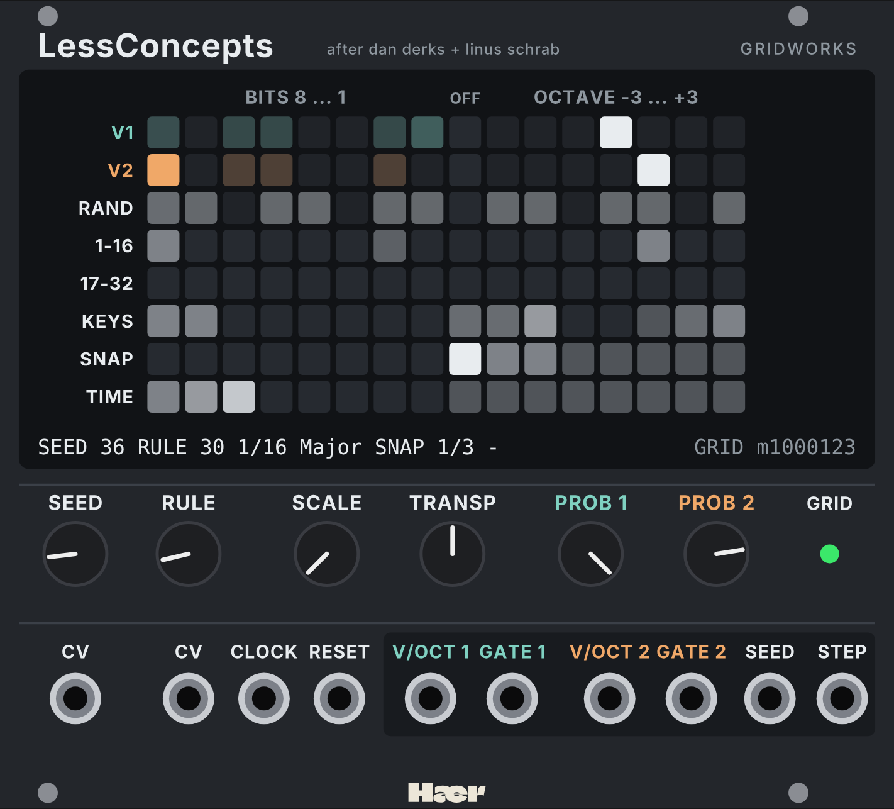

An 8-bit number, the SEED, changes once per step according to a RULE (0–255). This is a cellular automaton: each bit's next value depends on itself and its two neighbours. Some rules settle into loops, others never repeat. Rule 30 is the classic chaotic one.
Each of the two voices watches one of the 8 bits. When that bit is 1, the voice plays a note. The note comes from the whole 8-bit number, squeezed into a LOW–HIGH range of scale steps. Small changes such as a different bit, rule or range give you a related but new melody. That's how the script gives you 65,536 seed/rule combinations to explore.
| Row | Keys |
|---|---|
| 1 V1 · 2 V2 | Keys 1–8: which bit the voice follows (left = bit 8, right = bit 1). Dim = bits that are 1 now, bright = the voice playing. Key 9: voice off. Keys 10–16: octave −3 to +3. |
| 3 RAND | 1 seed · 2 rule · 4/5 bit for V1/V2 · 7 low · 8 high · 10/11 octave V1/V2 · 13 time · 14 time + everything · 16 everything |
| 4–5 notes | The 32 scale steps (row 4 = 1–16, row 5 = 17–32). The two brighter keys are LOW and HIGH; the dim one is the note just played. To set them, hold KEYS 1 (low) or KEYS 2 (high) and press a note. If LOW is above HIGH, the melody runs upside down. |
| 6 KEYS | 1 = set LOW, 2 = set HIGH (hold) · 9 / 10 / 11 = cycle snapshots down / random / up · 14 hold = clear all snapshots · 15 hold = clear the selected one · 16 = take a snapshot |
| 7–8 SNAP | Keys 9–16: snapshots 1–8 (row 7) and 9–16 (row 8). Dim = empty, mid = stored, bright = selected. Holding a snapshot pauses cycling. |
| 8 TIME | Keys 1 / 2 / 3: slower · middle (1/16) · faster. The steps are 1/8, 1/8t, 1/16, 1/16t, 1/32 (menu: wider ranges). |
On the panel, click the same keys. For LOW/HIGH, click KEYS 1 or 2 once, then click a note. The hold keys work by holding the mouse button down.
A snapshot stores seed, rule, both bits, both octaves, LOW/HIGH, time and cycle length. With snapshots stored, tap 9 / 10 / 11 on the KEYS row to cycle down / random / up, changing every 4 beats (menu: 1–32). Tap the same key again to stop.
Hold a cycle key for half a second to make cycling destructive (the key goes brighter). In this mode, whatever you change is written straight into the selected snapshot, so you can sculpt each snapshot while it plays. Hold again to switch it back.
| SEED, RULE (+ CV) | 0–255. A CV of 0–10 V sweeps the full range on top of the knob. Each new value restarts the automaton from that seed. The knobs follow the grid's RAND keys and snapshots. |
| SCALE | The norns scale list: Major, Natural Minor, Dorian… Chromatic (41 scales), root C. The knob's tooltip shows the name. |
| TRANSP | Moves both voices ±24 semitones. |
| PROB 1 / 2 | Chance (%) that a voice plays when its bit says so. Lower it for space. |
| Outputs | V/OCT 1/2 (0 V = C4, held between notes) · GATE 1/2 · SEED: the 8 bits as 0–10 V, a stepped random-ish CV for filters, etc. · STEP: a trigger every step. |
Not included from the norns version: the ~refrain softcut looper, the Passersby engine, and MIDI/crow/JF/w/syn outputs. Needs a 16-wide grid. Everything (snapshots, cycle mode, menu choices, grid) is saved with the patch.